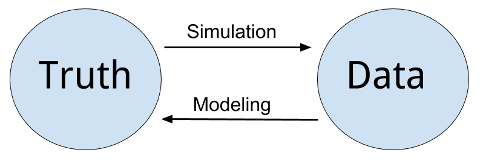
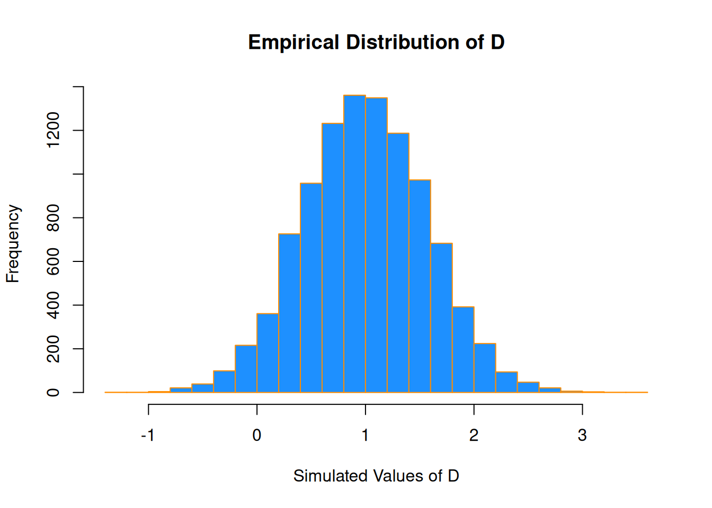
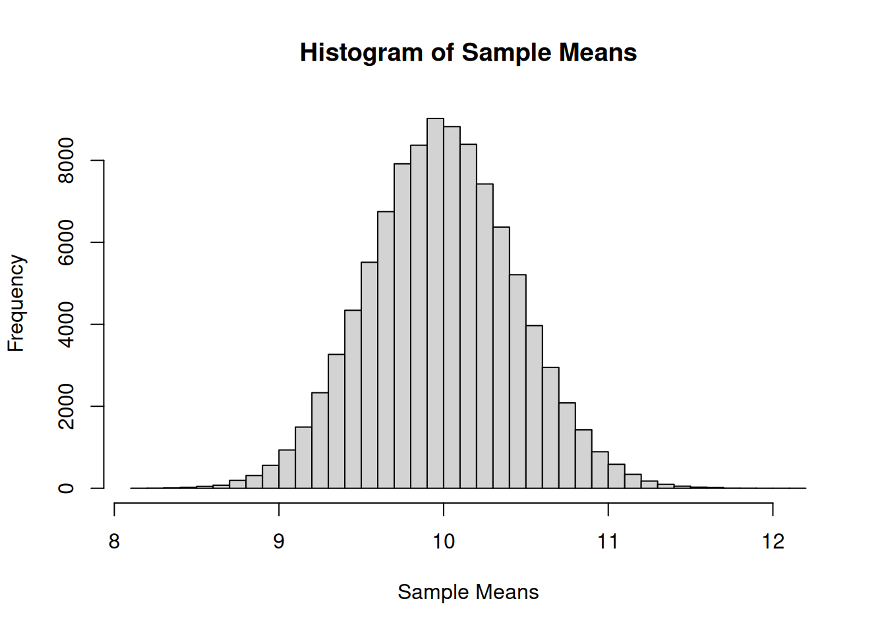
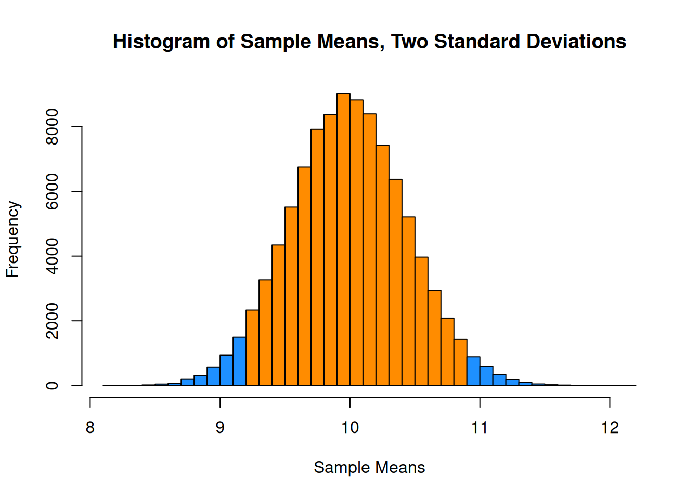

dnorm(x = 3, mean = 2, sd = 5)[1] 0.07820854RRWhen working with different statistical distributions, we often want to make probabilistic statements based on the distribution.
We typically want to know one of four things:
This used to be done with statistical tables printed in the back of textbooks. Now, R has functions for obtaining density, distribution, quantile and random values.
The general naming structure of the relevant R functions is:
dname calculates density (pdf) at input x.pname calculates distribution (cdf) at input x.qname calculates the quantile at an input probability.rname generates a random draw from a particular distribution.Note that name represents the name of the given distribution.
For example, consider a random variable \(X\) which is \(N(\mu = 2, \sigma^2 = 25)\). (Note, we are parameterizing using the variance \(\sigma^2\). R however uses the standard deviation.)
To calculate the value of the pdf at x = 3, that is, the height of the curve at x = 3, use:
dnorm(x = 3, mean = 2, sd = 5)[1] 0.07820854To calculate the value of the cdf at x = 3, that is, \(P(X \leq 3)\), the probability that \(X\) is less than or equal to 3, use:
pnorm(q = 3, mean = 2, sd = 5)[1] 0.5792597Or, to calculate the quantile for probability 0.975, use:
qnorm(p = 0.975, mean = 2, sd = 5)[1] 11.79982Lastly, to generate a random sample of size n = 10, use:
rnorm(n = 10, mean = 2, sd = 5) [1] 7.9118377 6.2757062 2.9439127 3.7110486 -3.2928610 -5.1707142
[7] 0.5699001 4.7097197 7.5931615 3.0771645These functions exist for many other distributions, including but not limited to:
| Command | Distribution |
|---|---|
*binom |
Binomial |
*t |
t |
*pois |
Poisson |
*f |
F |
*chisq |
Chi-Squared |
Where * can be d, p, q, and r. Each distribution will have its own set of parameters which need to be passed to the functions as arguments. For example, dbinom() would not have arguments for mean and sd, since those are not parameters of the distribution. Instead a binomial distribution is usually parameterized by \(n\) and \(p\), however R chooses to call them something else. To find the names that R uses we would use ?dbinom and see that R instead calls the arguments size and prob. For example:
dbinom(x = 6, size = 10, prob = 0.75)[1] 0.145998Also note that, when using the dname functions with discrete distributions, they are the pmf of the distribution. For example, the above command is \(P(Y = 6)\) if \(Y \sim b(n = 10, p = 0.75)\). (The probability of flipping an unfair coin 10 times and seeing 6 heads, if the probability of heads is 0.75.)
RA prerequisite for STAT 420 is an understanding of the basics of hypothesis testing. Recall the basic structure of hypothesis tests:
We’ll do some quick review of two of the most common tests to show how they are performed using R.
Suppose \(x_{i} \sim \mathrm{N}(\mu,\sigma^{2})\) and we want to test \(H_{0}: \mu = \mu_{0}\) versus \(H_{1}: \mu \neq \mu_{0}.\)
Assuming \(\sigma\) is unknown, we use the one-sample Student’s \(t\) test statistic:
[ t = t_{n-1}, ]
where \(\bar{x} = \displaystyle\frac{\sum_{i=1}^{n}x_{i}}{n}\) and \(s = \sqrt{\displaystyle\frac{1}{n - 1}\sum_{i=1}^{n}(x_i - \bar{x})^2}\).
A \(100(1 - \alpha)\)% confidence interval for \(\mu\) is given by,
[ {x} t_{/2, n-1} ]
where \(t_{\alpha/2, n-1}\) is the critical value such that \(P\left(t>t_{\alpha/2, n-1}\right) = \alpha/2\) for \(n-1\) degrees of freedom.
Suppose a grocery store sells “16 ounce” boxes of Captain Crisp cereal. A random sample of 9 boxes was taken and weighed. The weight in ounces is stored in the data frame capt_crisp.
capt_crisp = data.frame(weight = c(15.5, 16.2, 16.1, 15.8, 15.6, 16.0, 15.8, 15.9, 16.2))The company that makes Captain Crisp cereal claims that the average weight of a box is at least 16 ounces. We will assume the weight of cereal in a box is normally distributed and use a 0.05 level of significance to test the company’s claim.
To test \(H_{0}: \mu \geq 16\) versus \(H_{1}: \mu < 16\), the test statistic is
[ t = ]
The sample mean \(\bar{x}\) and the sample standard deviation \(s\) can be easily computed using R. We also create variables which store the hypothesized mean and the sample size.
x_bar = mean(capt_crisp$weight)
s = sd(capt_crisp$weight)
mu_0 = 16
n = 9We can then easily compute the test statistic.
t = (x_bar - mu_0) / (s / sqrt(n))
t[1] -1.2Under the null hypothesis, the test statistic has a \(t\) distribution with \(n - 1\) degrees of freedom, in this case 8.
To complete the test, we need to obtain the p-value of the test. Since this is a one-sided test with a less-than alternative, we need the area to the left of -1.2 for a \(t\) distribution with 8 degrees of freedom. That is,
[ P(t_{8} < -1.2) ]
pt(t, df = n - 1)[1] 0.1322336We now have the p-value of our test, which is greater than our significance level (0.05), so we fail to reject the null hypothesis.
Alternatively, this entire process could have been completed using one line of R code.
t.test(x = capt_crisp$weight, mu = 16, alternative = c("less"), conf.level = 0.95)
One Sample t-test
data: capt_crisp$weight
t = -1.2, df = 8, p-value = 0.1322
alternative hypothesis: true mean is less than 16
95 percent confidence interval:
-Inf 16.05496
sample estimates:
mean of x
15.9 We supply R with the data, the hypothesized value of \(\mu\), the alternative, and the confidence level. R then returns a wealth of information including:
Since the test was one-sided, R returned a one-sided confidence interval. If instead we wanted a two-sided interval for the mean weight of boxes of Captain Crisp cereal we could modify our code.
capt_test_results = t.test(capt_crisp$weight, mu = 16,
alternative = c("two.sided"), conf.level = 0.95)This time we have stored the results. By doing so, we can directly access portions of the output from t.test(). To see what information is available we use the names() function.
names(capt_test_results) [1] "statistic" "parameter" "p.value" "conf.int" "estimate"
[6] "null.value" "stderr" "alternative" "method" "data.name" We are interested in the confidence interval which is stored in conf.int.
capt_test_results$conf.int[1] 15.70783 16.09217
attr(,"conf.level")
[1] 0.95Let’s check this interval “by hand.” The one piece of information we are missing is the critical value, \(t_{\alpha/2, n-1} = t_{8}(0.025)\), which can be calculated in R using the qt() function.
qt(0.975, df = 8)[1] 2.306004So, the 95% CI for the mean weight of a cereal box is calculated by plugging into the formula,
[ {x} t_{/2, n-1} ]
c(mean(capt_crisp$weight) - qt(0.975, df = 8) * sd(capt_crisp$weight) / sqrt(9),
mean(capt_crisp$weight) + qt(0.975, df = 8) * sd(capt_crisp$weight) / sqrt(9))[1] 15.70783 16.09217Suppose \(x_{i} \sim \mathrm{N}(\mu_{x}, \sigma^{2})\) and \(y_{i} \sim \mathrm{N}(\mu_{y}, \sigma^{2}).\)
Want to test \(H_{0}: \mu_{x} - \mu_{y} = \mu_{0}\) versus \(H_{1}: \mu_{x} - \mu_{y} \neq \mu_{0}.\)
Assuming \(\sigma\) is unknown, use the two-sample Student’s \(t\) test statistic:
[ t = t_{n+m-2}, ]
where \(\displaystyle\bar{x}=\frac{\sum_{i=1}^{n}x_{i}}{n}\), \(\displaystyle\bar{y}=\frac{\sum_{i=1}^{m}y_{i}}{m}\), and \(s_p^2 = \displaystyle\frac{(n-1)s_x^2+(m-1)s_y^2}{n+m-2}\).
A \(100(1-\alpha)\)% CI for \(\mu_{x}-\mu_{y}\) is given by
[ ({x} - {y}) t_{/2, n+m-2}(s_{p}), ]
where \(t_{\alpha/2, n+m-2}\) is the critical value such that \(P\left(t>t_{\alpha/2, n+m-2}\right)=\alpha/2\).
Assume that the distributions of \(X\) and \(Y\) are \(\mathrm{N}(\mu_{1},\sigma^{2})\) and \(\mathrm{N}(\mu_{2},\sigma^{2})\), respectively. Given the \(n = 6\) observations of \(X\),
x = c(70, 82, 78, 74, 94, 82)
n = length(x)and the \(m = 8\) observations of \(Y\),
y = c(64, 72, 60, 76, 72, 80, 84, 68)
m = length(y)we will test \(H_{0}: \mu_{1} = \mu_{2}\) versus \(H_{1}: \mu_{1} > \mu_{2}\).
First, note that we can calculate the sample means and standard deviations.
x_bar = mean(x)
s_x = sd(x)
y_bar = mean(y)
s_y = sd(y)We can then calculate the pooled standard deviation.
[ s_{p} = ]
s_p = sqrt(((n - 1) * s_x ^ 2 + (m - 1) * s_y ^ 2) / (n + m - 2))Thus, the relevant \(t\) test statistic is given by
[ t = . ]
t = ((x_bar - y_bar) - 0) / (s_p * sqrt(1 / n + 1 / m))
t[1] 1.823369Note that \(t \sim t_{n + m - 2} = t_{12}\), so we can calculate the p-value, which is
[ P(t_{12} > 1.8233692). ]
1 - pt(t, df = n + m - 2)[1] 0.04661961But, then again, we could have simply performed this test in one line of R.
t.test(x, y, alternative = c("greater"), var.equal = TRUE)
Two Sample t-test
data: x and y
t = 1.8234, df = 12, p-value = 0.04662
alternative hypothesis: true difference in means is greater than 0
95 percent confidence interval:
0.1802451 Inf
sample estimates:
mean of x mean of y
80 72 Recall that a two-sample \(t\)-test can be done with or without an equal variance assumption. Here var.equal = TRUE tells R we would like to perform the test under the equal variance assumption.
Above we carried out the analysis using two vectors x and y. In general, we will have a preference for using data frames.
t_test_data = data.frame(values = c(x, y),
group = c(rep("A", length(x)), rep("B", length(y))))We now have the data stored in a single variables (values) and have created a second variable (group) which indicates which “sample” the value belongs to.
t_test_data values group
1 70 A
2 82 A
3 78 A
4 74 A
5 94 A
6 82 A
7 64 B
8 72 B
9 60 B
10 76 B
11 72 B
12 80 B
13 84 B
14 68 BNow to perform the test, we still use the t.test() function but with the ~ syntax and a data argument.
t.test(values ~ group, data = t_test_data,
alternative = c("greater"), var.equal = TRUE)
Two Sample t-test
data: values by group
t = 1.8234, df = 12, p-value = 0.04662
alternative hypothesis: true difference in means between group A and group B is greater than 0
95 percent confidence interval:
0.1802451 Inf
sample estimates:
mean in group A mean in group B
80 72 Simulation and model fitting are related but opposite processes.

Often we will simulate data according to a process we decide, then use a modeling method seen in class. We can then verify how well the method works, since we know the data generating process.
One of the biggest strengths of R is its ability to carry out simulations using built-in functions for generating random samples from certain distributions. We’ll look at two very simple examples here, however simulation will be a topic we revisit several times throughout the course.
Consider the model:
[ \[\begin{split} X_{11}, X_{12}, \ldots, X_{1n} \sim N(\mu_1,\sigma^2)\\ X_{21}, X_{22}, \ldots, X_{2n} \sim N(\mu_2,\sigma^2) \end{split}\]]
Assume that \(\mu_1 = 6\), \(\mu_2 = 5\), \(\sigma^2 = 4\) and \(n = 25\).
Let
[ \[\begin{aligned} \bar{X}_1 &= \displaystyle\frac{1}{n}\sum_{i=1}^{n}X_{1i}\\ \bar{X}_2 &= \displaystyle\frac{1}{n}\sum_{i=1}^{n}X_{2i}\\ D &= \bar{X}_1 - \bar{X}_2. \end{aligned}\]]
Suppose we would like to calculate \(P(0 < D < 2)\). First we will need to obtain the distribution of \(D\).
Recall,
[ {X}_1 N(_1,) ]
and
[ {X}_2 N(_2,). ]
Then,
[ D = {X}_1 - {X}_2 N(_1-_2, + ) = N(6-5, + ). ]
So,
[ D N(= 1, ^2 = 0.32). ]
Thus,
[ P(0 < D < 2) = P(D < 2) - P(D < 0). ]
This can then be calculated using R without a need to first standardize, or use a table.
pnorm(2, mean = 1, sd = sqrt(0.32)) - pnorm(0, mean = 1, sd = sqrt(0.32))[1] 0.9229001An alternative approach, would be to simulate a large number of observations of \(D\) then use the empirical distribution to calculate the probability.
Our strategy will be to repeatedly:
We will repeat the process a large number of times. Then we will use the distribution of the simulated observations of \(d_s\) as an estimate for the true distribution of \(D\).
set.seed(42)
num_samples = 10000
differences = rep(0, num_samples)Before starting our for loop to perform the operation, we set a seed for reproducibility, create and set a variable num_samples which will define the number of repetitions, and lastly create a variables differences which will store the simulate values, \(d_s\).
By using set.seed() we can reproduce the random results of rnorm() each time starting from that line.
for (s in 1:num_samples) {
x1 = rnorm(n = 25, mean = 6, sd = 2)
x2 = rnorm(n = 25, mean = 5, sd = 2)
differences[s] = mean(x1) - mean(x2)
}To estimate \(P(0 < D < 2)\) we will find the proportion of values of \(d_s\) (among the 10^{4} values of \(d_s\) generated) that are between 0 and 2.
mean(0 < differences & differences < 2)[1] 0.9222Recall that above we derived the distribution of \(D\) to be \(N(\mu = 1, \sigma^2 = 0.32)\)
If we look at a histogram of the differences, we find that it looks very much like a normal distribution.
hist(differences, breaks = 20,
main = "Empirical Distribution of D",
xlab = "Simulated Values of D",
col = "dodgerblue",
border = "darkorange")
Also the sample mean and variance are very close to what we would expect.
mean(differences)[1] 1.001423var(differences)[1] 0.3230183We could have also accomplished this task with a single line of more “idiomatic” R.
set.seed(42)
diffs = replicate(10000, mean(rnorm(25, 6, 2)) - mean(rnorm(25, 5, 2)))Use ?replicate to take a look at the documentation for the replicate function and see if you can understand how this line performs the same operations that our for loop above executed.
mean(differences == diffs)[1] 1We see that by setting the same seed for the randomization, we actually obtain identical results!
For another example of simulation, we will simulate observations from a Poisson distribution, and examine the empirical distribution of the sample mean of these observations.
Recall, if
[ X Pois() ]
then
[ E[X] = ]
and
[ Var[X] = . ]
Also, recall that for a random variable \(X\) with finite mean \(\mu\) and finite variance \(\sigma^2\), the central limit theorem tells us that the mean, \(\bar{X}\) of a random sample of size \(n\) is approximately normal for large values of \(n\). Specifically, as \(n \to \infty\),
[ {X} N(, ). ]
The following verifies this result for a Poisson distribution with \(\mu = 10\) and a sample size of \(n = 50\).
set.seed(1337)
mu = 10
sample_size = 50
samples = 100000
x_bars = rep(0, samples)for(i in 1:samples){
x_bars[i] = mean(rpois(sample_size, lambda = mu))
}x_bar_hist = hist(x_bars, breaks = 50,
main = "Histogram of Sample Means",
xlab = "Sample Means")
Now we will compare sample statistics from the empirical distribution with their known values based on the parent distribution.
c(mean(x_bars), mu)[1] 10.00008 10.00000c(var(x_bars), mu / sample_size)[1] 0.1989732 0.2000000c(sd(x_bars), sqrt(mu) / sqrt(sample_size))[1] 0.4460641 0.4472136And here, we will calculate the proportion of sample means that are within 2 standard deviations of the population mean.
mean(x_bars > mu - 2 * sqrt(mu) / sqrt(sample_size) &
x_bars < mu + 2 * sqrt(mu) / sqrt(sample_size))[1] 0.95429This last histogram uses a bit of a trick to approximately shade the bars that are within two standard deviations of the mean.)
shading = ifelse(x_bar_hist$breaks > mu - 2 * sqrt(mu) / sqrt(sample_size) &
x_bar_hist$breaks < mu + 2 * sqrt(mu) / sqrt(sample_size),
"darkorange", "dodgerblue")
x_bar_hist = hist(x_bars, breaks = 50, col = shading,
main = "Histogram of Sample Means, Two Standard Deviations",
xlab = "Sample Means")